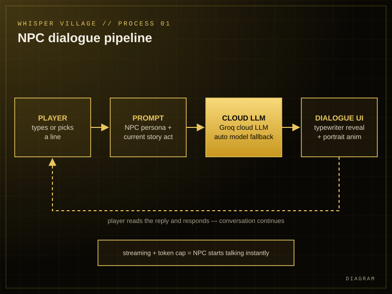
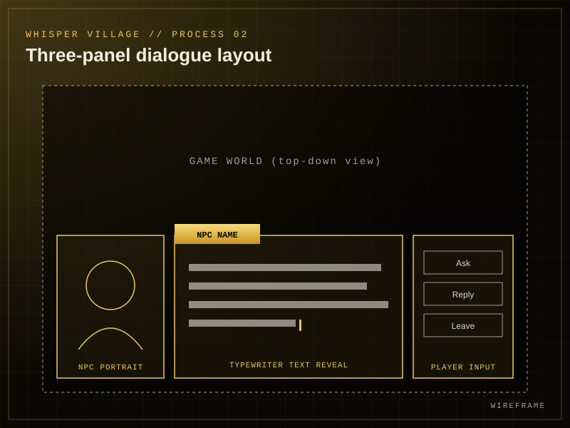
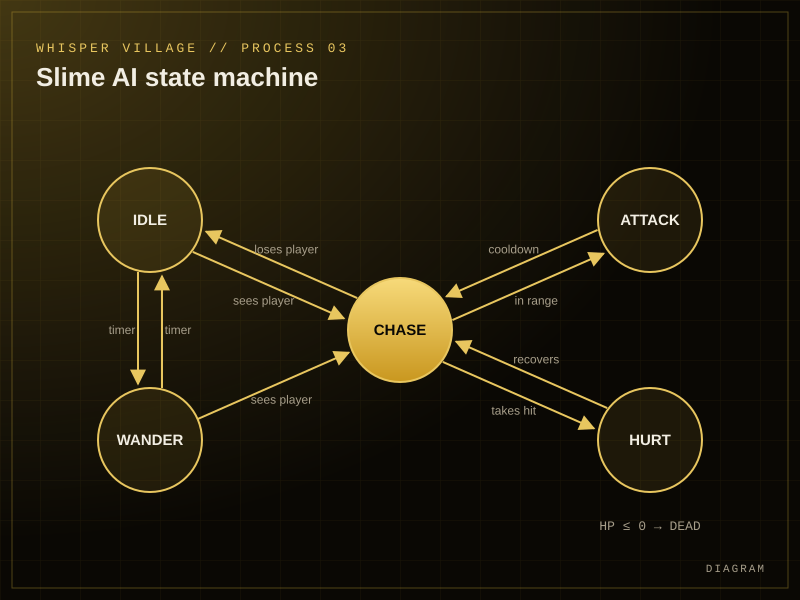
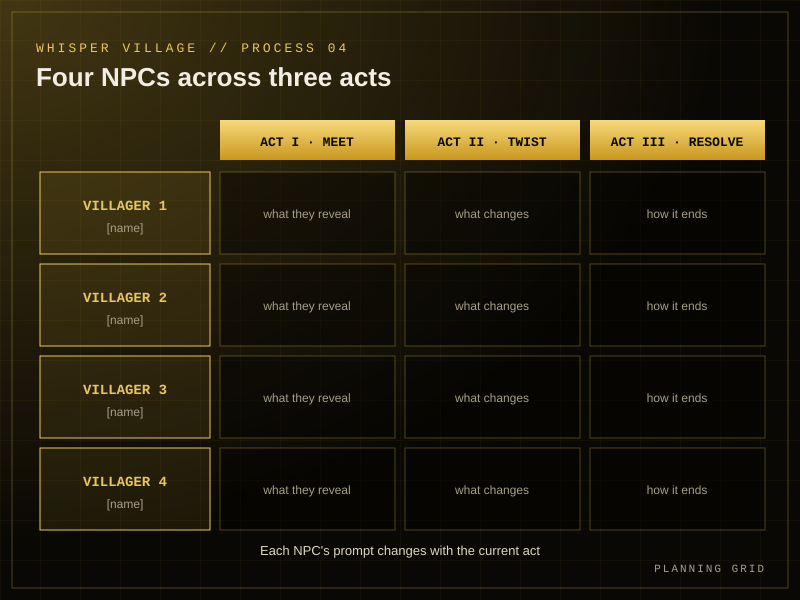

LEVEL 02 // 2D RPG
WHISPER VILLAGE
MODE: 2D RPGENGINE: UNITY · C#STATUS: CLEARED ✓
A village where every NPC talks back. Live.
The pitch
Forget scripted dialogue trees. In Whisper Village you talk to the villagers and they answer in real time, powered by live AI. Four characters, three acts, and conversations that never play out the same way twice. Ask the wrong question and you might learn more than you bargained for.
The challenge
Make NPCs feel alive, beyond what a dialogue tree can do, and keep replies fast enough to feel like a real conversation.
What I did
Built it end to end: the live AI dialogue pipeline and the cloud worker behind it, a visual-novel conversation UI, the enemy AI, pixel-art animation and the story behind every character.
Loadout
- UNITY
- C#
- GROQ API
- SERVERLESS WORKER
- JAVASCRIPT
- PIXEL ART
Features
Conversations you can't script.
LIVE AI DIALOGUEVillagers reply in their own words, streamed as they speak.
ALWAYS ANSWERSA cloud worker tries model after model until one replies, then remembers the one that works.
VISUAL-NOVEL UIThree-panel conversations with animated portraits and a typewriter reveal.
A STORY THAT SHIFTSEach villager changes what they know and say across three acts.
SMART SLIMESEnemies that idle, wander, chase and attack, driven by a state machine.
HAND-MADE PIXELSA cosy pixel-art village with animated characters.
Dev log
Making villagers talk back




// Try each model until one answers, then remember the one that worked for (const model of modelOrder(env)) { const res = await askGroq(model, messages, Math.max(600, unityMaxTokens * 4)); const text = cleanReply(res.text); // strip <think> blocks + "Player:" lines if (res.ok && text) { WORKING_MODEL = model; // later requests skip failed models return json({ text, model }); } } return json({ text: FALLBACK_LINE, model: null });